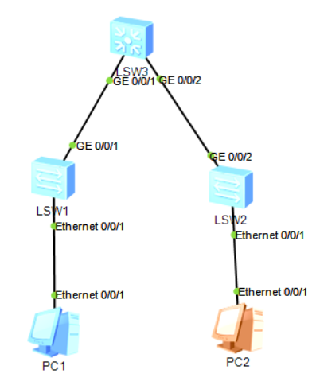
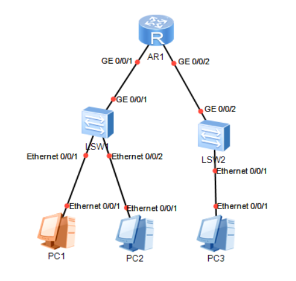
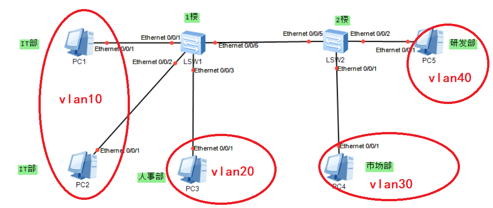
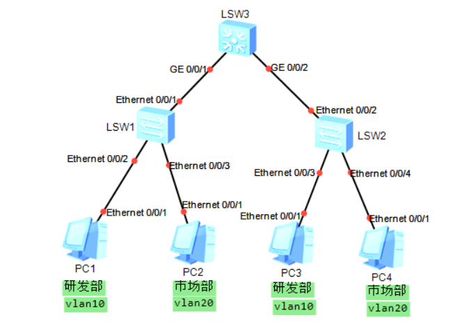
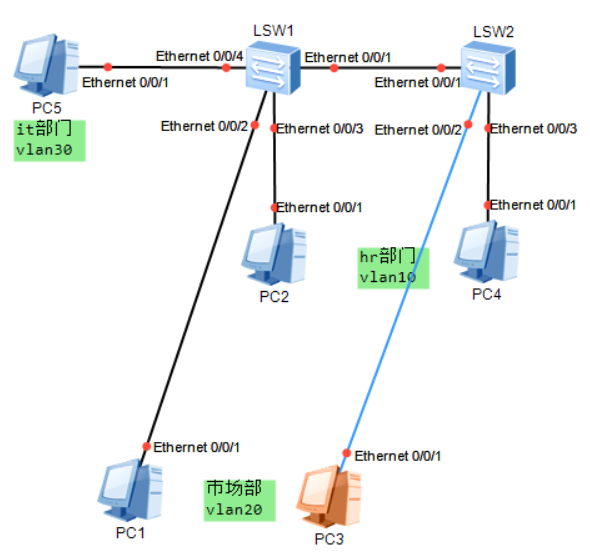

第一章 ensp与vrp的基础操作
内容描述
实例详情
实验说明：配置telnet登录，使得可以通过ar1上的telnet进行远程访问
拓扑图：
编址：
| 设备 | 接口 | IP地址 | 子网掩码 | 默认网关 |
|---|---|---|---|---|
| ar1 | g0/0/0 | 10.1.1.254 | 24 | - |
| ar2 | g0/0/0 | 10.1.1.1 | 24 | 10.1.1.254 |
| ar3 | g0/0/0 | 10.1.1.20 | 24 | 10.1.1.254 |
配置过程：
1.先将计划的IP地址分配到相应的设备和对应端口上，完成之后测试联通性
<Huawei>
Apr 13 2022 09:54:12-08:00 Huawei %%01IFPDT/4/IF_STATE(l)[0]:Interface GigabitEt
hernet0/0/0 has turned into UP state.
<Huawei>sys
Enter system view, return user view with Ctrl+Z.
[Huawei]int g0/0/0
[Huawei-GigabitEthernet0/0/0]ip add 10.1.1.254 24
Apr 13 2022 09:55:10-08:00 Huawei %%01IFNET/4/LINK_STATE(l)[1]:The line protocol
IP on the interface GigabitEthernet0/0/0 has entered the UP state.
[Huawei-GigabitEthernet0/0/0]
ar2与ar3配置命令相似
2.配置telnet登录验证
<Huawei>sys
Enter system view, return user view with Ctrl+Z.
[Huawei]user-inter
[Huawei]user-interface vty 0 4
[Huawei-ui-vty0-4]aut
[Huawei-ui-vty0-4]authentication-mode pass
[Huawei-ui-vty0-4]authentication-mode password
Please configure the login password (maximum length 16):huawei
[Huawei-ui-vty0-4]q
[Huawei]
这时通过其他两个任何一个路由器输入telnet 10.1.1.254，并输入密码，即可进入ar1的做界面
如果分不清到底是不是ar1的路由器，可以先将ar1路由器内的名称改为ar1，先进入配置视图（[Huawei]）然后输入sysname 名称。
第二章 交换机基础配置
内容描述
实例详情
实验说明：三台交换机，1和2是接入，3是汇聚，交换机之间使用全双工，并配置接口速率
拓扑图：
编址：
| 设备 | 接口 | IP地址 | 子网掩码 | 默认网关 |
|---|---|---|---|---|
| pc1 | e0/0/1 | 10.1.1.1 | 24 | - |
| pc2 | e0/0/1 | 10.1.1.2 | 24 | - |
配置过程：
先为PC配置好IP地址和子网掩码，并在其中一台pc机ping另一台pc机的IP地址，检查连通性
接下来配置交换机
1.配置交换机双工模式
配置前，由于交换机的自协商协议默认为开启状态，需先将该协议关闭，在进行配置
<Huawei>sys
Enter system view, return user view with Ctrl+Z.
[Huawei]int g0/0/1
[Huawei-GigabitEthernet0/0/1]undo ne
[Huawei-GigabitEthernet0/0/1]undo negotiation au
[Huawei-GigabitEthernet0/0/1]undo negotiation auto
[Huawei-GigabitEthernet0/0/1]dupl
[Huawei-GigabitEthernet0/0/1]duplex
Apr 13 2022 11:11:22-08:00 Huawei DS/4/DATASYNC_CFGCHANGE:OID 1.3.6.1.4.1.2011.5.25.191.3.1 configurations have been changed. The current change number is 4, the change loop count is 0, and the maximum number of records is 4095.fu
[Huawei-GigabitEthernet0/0/1]duplex full
[Huawei-GigabitEthernet0/0/1]
Apr 13 2022 11:11:32-08:00 Huawei DS/4/DATASYNC_CFGCHANGE:OID 1.3.6.1.4.1.2011.5.25.191.3.1 configurations have been changed. The current change number is 5, the change loop count is 0, and the maximum number of records is 4095.
[Huawei-GigabitEthernet0/0/1]
上下的三个端口分别配置此命令，至此，交换机间的工作模式全部切换为了全双工。
2.配置接口速率
由于用户（PC）较少，所以将GE口配置为100mbit/s，e口配置为10Mbit/s；配置前，由于交换机的自协商协议默认为开启状态，需先将该协议关闭，在进行配置
<Huawei>sys
Enter system view, return user view with Ctrl+Z.
[Huawei]sys s1
[s1]int
Apr 13 2022 11:22:42-08:00 s1 DS/4/DATASYNC_CFGCHANGE:OID 1.3.6.1.4.1.2011.5.25.191.3.1 configurations have been changed. The current change number is 6, the change loop count is 0, and the maximum number of records is 4095.e0/0/1
[s1-Ethernet0/0/1]un
[s1-Ethernet0/0/1]undo ne
[s1-Ethernet0/0/1]undo negotiation au
[s1-Ethernet0/0/1]undo negotiation auto
[s1-Ethernet0/0/1]sp
[s1-Ethernet0/0/1]speed
Apr 13 2022 11:23:02-08:00 s1 DS/4/DATASYNC_CFGCHANGE:OID 1.3.6.1.4.1.2011.5.25.191.3.1 configurations have been changed. The current change number is 7, the change loop count is 0, and the maximum number of records is 4095.10
[s1-Ethernet0/0/1]
Apr 13 2022 11:23:12-08:00 s1 DS/4/DATASYNC_CFGCHANGE:OID 1.3.6.1.4.1.2011.5.25.191.3.1 configurations have been changed. The current change number is 8, the change loop count is 0, and the maximum number of records is 4095.
[s1-Ethernet0/0/1]int g0/0/1
[s1-GigabitEthernet0/0/1]
注意每一个端口都要单独关掉
arp与proxy arp
实验说明：r1，s1，s2，配置静态arp且在路由器上配置arp代理
拓扑图：
编址：
| 设备 | 接口 | IP地址 | 子网掩码 | 默认网关 |
|---|---|---|---|---|
| r1 | g0/0/1 | 10.1.1.254 | 24 | - |
| r1 | g0/0/2 | 10.2.254 | 24 | - |
| pc1 | e0/0/1 | 10.1.1.1 | 16 | - |
| pc2 | e0/0/1 | 10.1.1.2 | 16 | - |
| pc3 | e0/0/1 | 10.1.2.3 | 16 | - |
配置过程：
按照编址表将IP地址配置到各个位置，
配置静态arp
[r1]arp static 10.1.1.1 5489-983D-766A
[r1]arp static 10.1.1.2 5489-9857-45FC
[r1]arp static 10.1.2.3 5489-9812-085E
[r1]
配置proxy arp
华为交换机默认代理arp是关闭状态，上面的两个网段是不能相互访问的，需要将对应网段接口的代理arp打开
[r1]int g0/0/1
[r1-GigabitEthernet0/0/1]arp-pr
[r1-GigabitEthernet0/0/1]arp-proxy en
[r1-GigabitEthernet0/0/1]arp-proxy enable
[r1-GigabitEthernet0/0/1]int g0/0/2
[r1-GigabitEthernet0/0/2]arp-pr
[r1-GigabitEthernet0/0/2]arp-proxy
[r1-GigabitEthernet0/0/2]arp-proxy en
[r1-GigabitEthernet0/0/2]
这样10.1.1.0网段就能和10.1.2.0网段通信了
第三章 valn
内容描述
实例详情
access
实验说明：只允许同部门可互相通信；配置access接口和vlan的基本配置
拓扑图：
编址：
| 设备 | 接口 | IP地址 | 子网掩码 | 默认网关 |
|---|---|---|---|---|
| pc1 | e0/0/1 | 10.1.1.1 | 24 | - |
| pc2 | e0/0/1 | 10.1.1.2 | 24 | - |
| pc3 | e0/0/1 | 10.1.1.3 | 24 | - |
| pc4 | e0/0/1 | 10.1.1.4 | 24 | - |
| pc5 | e0/0/1 | 10.1.1.5 | 24 | - |
配置步骤：
按照编址表将IP地址分配到pc机上，并检查连通性
接下来创建vlan；默认存在vlan1，且所有接口都被划分在了vlan1中
先创建10和20两个vlan
然后在使用vlan bath同时创建两个vlan
完成之后查看一下当前设备中vlan的相关信息
[s1]
[s1]vlan 10
[s1-vlan10]vlan 20
[s1-vlan20]vlan
Apr 15 2022 16:32:00-08:00 s1 DS/4/DATASYNC_CFGCHANGE:OID 1.3.6.1.4.1.2011.5.25.191.3.1 configurations have been changed. The current change number is 6, the change loop count is 0, and the maximum number of records is 4095.b
[s1-vlan20]vlan b
[s1-vlan20]vlan ba
[s1-vlan20]q
[s1]vlan batch 30 40
Info: This operation may take a few seconds. Please wait for a moment...done.
[s1]
Apr 15 2022 16:32:30-08:00 s1 DS/4/DATASYNC_CFGCHANGE:OID 1.3.6.1.4.1.2011.5.25.191.3.1 configurations have been changed. The current change number is 7, the change loop count is 0, and the maximum number of records is 4095.
[s1]dis vlan
The total number of vlans is : 5
--------------------------------------------------------------------------------
U: Up; D: Down; TG: Tagged; UT: Untagged;
MP: Vlan-mapping; ST: Vlan-stacking;
#: ProtocolTransparent-vlan; *: Management-vlan;
--------------------------------------------------------------------------------
VID Type Ports
--------------------------------------------------------------------------------
1 common UT:Eth0/0/1(U) Eth0/0/2(U) Eth0/0/3(U) Eth0/0/4(D)
Eth0/0/5(U) Eth0/0/6(D) Eth0/0/7(D) Eth0/0/8(D)
Eth0/0/9(D) Eth0/0/10(D) Eth0/0/11(D) Eth0/0/12(D)
Eth0/0/13(D) Eth0/0/14(D) Eth0/0/15(D) Eth0/0/16(D)
Eth0/0/17(D) Eth0/0/18(D) Eth0/0/19(D) Eth0/0/20(D)
Eth0/0/21(D) Eth0/0/22(D) GE0/0/1(D) GE0/0/2(D)
10 common
20 common
30 common
40 common
VID Status Property MAC-LRN Statistics Description
--------------------------------------------------------------------------------
1 enable default enable disable VLAN 0001
10 enable default enable disable VLAN 0010
20 enable default enable disable VLAN 0020
30 enable default enable disable VLAN 0030
40 enable default enable disable VLAN 0040
[s1]
sys
Enter system view, return user view with Ctrl+Z.
[Huawei]sys s2
[s2]vlan batch 40 4
Apr 15 2022 16:36:11-08:00 s2 DS/4/DATASYNC_CFGCHANGE:OID 1.3.6.1.4.1.2011.5.25.191.3.1 configurations have been changed. The current change number is 4, the change loop count is 0, and the maximum number of rvlan batch 30 40
Info: This operation may take a few seconds. Please wait for a moment...done.
[s2]
Apr 15 2022 16:36:31-08:00 s2 DS/4/DATASYNC_CFGCHANGE:OID 1.3.6.1.4.1.2011.5.25.191.3.1 configurations have been changed. The current change number is 5, the change loop count is 0, and the maximum number of records is 4095.
[s2]dis vlan
The total number of vlans is : 3
--------------------------------------------------------------------------------
U: Up; D: Down; TG: Tagged; UT: Untagged;
MP: Vlan-mapping; ST: Vlan-stacking;
#: ProtocolTransparent-vlan; *: Management-vlan;
--------------------------------------------------------------------------------
VID Type Ports
--------------------------------------------------------------------------------
1 common UT:Eth0/0/1(U) Eth0/0/2(U) Eth0/0/3(D) Eth0/0/4(D)
Eth0/0/5(U) Eth0/0/6(D) Eth0/0/7(D) Eth0/0/8(D)
Eth0/0/9(D) Eth0/0/10(D) Eth0/0/11(D) Eth0/0/12(D)
Eth0/0/13(D) Eth0/0/14(D) Eth0/0/15(D) Eth0/0/16(D)
Eth0/0/17(D) Eth0/0/18(D) Eth0/0/19(D) Eth0/0/20(D)
Eth0/0/21(D) Eth0/0/22(D) GE0/0/1(D) GE0/0/2(D)
30 common
40 common
VID Status Property MAC-LRN Statistics Description
--------------------------------------------------------------------------------
1 enable default enable disable VLAN 0001
30 enable default enable disable VLAN 0030
40 enable default enable disable VLAN 0040
[s2]
配置access
将所有连接交换机的的端口都配置为access，并配置接口的默认vlan同时加入到相应的vlan中
[s2]int e0/0/1
[s2-Ethernet0/0/1]port lin
[s2-Ethernet0/0/1]port link-ty
[s2-Ethernet0/0/1]port link-type ass
[s2-Ethernet0/0/1]port link-type a
[s2-Ethernet0/0/1]port link-type access
[s2-Ethernet0/0/1]
Apr 15 2022 16:49:12-08:00 s2 DS/4/DATASYNC_CFGCHANGE:OID 1.3.6.1.4.1.2011.5.25.191.3.1 configurations have been changed. The current change number is 6, the change loop count is 0, and the maximum number of records is 4095.por
[s2-Ethernet0/0/1]port de
[s2-Ethernet0/0/1]port default vlan 30
[s2-Ethernet0/0/1]int e0
Apr 15 2022 16:50:42-08:00 s2 DS/4/DATASYNC_CFGCHANGE:OID 1.3.6.1.4.1.2011.5.25.191.3.1 configurations have been changed. The current change number is 7, the change loop count is 0, and the maximum number of records is 4095./0/2
[s2-Ethernet0/0/2]po
[s2-Ethernet0/0/2]port lin
[s2-Ethernet0/0/2]port link-t
[s2-Ethernet0/0/2]port link-type acc
[s2-Ethernet0/0/2]port link-type access
[s2-Ethernet0/0/2]po
[s2-Ethernet0/0/2]portde
[s2-Ethernet0/0/2]port de
[s2-Ethernet0/0/2]port default vlan
Apr 15 2022 16:51:12-08:00 s2 DS/4/DATASYNC_CFGCHANGE:OID 1.3.6.1.4.1.2011.5.25.191.3.1 configurations have been changed. The current change number is 8, the change loop count is 0, and the maximum number of records is 4095.40
[s2-Ethernet0/0/2]
然后再看一下vlan信息
[s1]dis vlan
The total number of vlans is : 3
--------------------------------------------------------------------------------
U: Up; D: Down; TG: Tagged; UT: Untagged;
MP: Vlan-mapping; ST: Vlan-stacking;
#: ProtocolTransparent-vlan; *: Management-vlan;
--------------------------------------------------------------------------------
VID Type Ports
--------------------------------------------------------------------------------
1 common UT:Eth0/0/4(D) Eth0/0/5(U) Eth0/0/6(D) Eth0/0/7(D)
Eth0/0/8(D) Eth0/0/9(D) Eth0/0/10(D) Eth0/0/11(D)
Eth0/0/12(D) Eth0/0/13(D) Eth0/0/14(D) Eth0/0/15(D)
Eth0/0/16(D) Eth0/0/17(D) Eth0/0/18(D) Eth0/0/19(D)
Eth0/0/20(D) Eth0/0/21(D) Eth0/0/22(D) GE0/0/1(D)
GE0/0/2(D)
10 common UT:Eth0/0/1(U) Eth0/0/2(U)
20 common UT:Eth0/0/3(U)
VID Status Property MAC-LRN Statistics Description
--------------------------------------------------------------------------------
1 enable default enable disable VLAN 0001
10 enable default enable disable VLAN 0010
20 enable default enable disable VLAN 0020
[s1]
[s2]dis vlan
The total number of vlans is : 3
--------------------------------------------------------------------------------
U: Up; D: Down; TG: Tagged; UT: Untagged;
MP: Vlan-mapping; ST: Vlan-stacking;
#: ProtocolTransparent-vlan; *: Management-vlan;
--------------------------------------------------------------------------------
VID Type Ports
--------------------------------------------------------------------------------
1 common UT:Eth0/0/3(D) Eth0/0/4(D) Eth0/0/5(U) Eth0/0/6(D)
Eth0/0/7(D) Eth0/0/8(D) Eth0/0/9(D) Eth0/0/10(D)
Eth0/0/11(D) Eth0/0/12(D) Eth0/0/13(D) Eth0/0/14(D)
Eth0/0/15(D) Eth0/0/16(D) Eth0/0/17(D) Eth0/0/18(D)
Eth0/0/19(D) Eth0/0/20(D) Eth0/0/21(D) Eth0/0/22(D)
GE0/0/1(D) GE0/0/2(D)
30 common UT:Eth0/0/1(U)
40 common UT:Eth0/0/2(U)
VID Status Property MAC-LRN Statistics Description
--------------------------------------------------------------------------------
1 enable default enable disable VLAN 0001
30 enable default enable disable VLAN 0030
40 enable default enable disable VLAN 0040
[s2]
可以看到俩个交换机连接各个pc的端口都已划分到对应的vlan中，接下来验证结果，验证pc1能否与pc2，pc3通信
PC>ping 10.1.1.2
Ping 10.1.1.2: 32 data bytes, Press Ctrl_C to break
From 10.1.1.2: bytes=32 seq=1 ttl=128 time=32 ms
From 10.1.1.2: bytes=32 seq=2 ttl=128 time=47 ms
From 10.1.1.2: bytes=32 seq=3 ttl=128 time=63 ms
From 10.1.1.2: bytes=32 seq=4 ttl=128 time=46 ms
From 10.1.1.2: bytes=32 seq=5 ttl=128 time=47 ms
--- 10.1.1.2 ping statistics ---
5 packet(s) transmitted
5 packet(s) received
0.00% packet loss
round-trip min/avg/max = 32/47/63 ms
PC>ping 10.1.1.3
Ping 10.1.1.3: 32 data bytes, Press Ctrl_C to break
From 10.1.1.1: Destination host unreachable
From 10.1.1.1: Destination host unreachable
From 10.1.1.1: Destination host unreachable
From 10.1.1.1: Destination host unreachable
From 10.1.1.1: Destination host unreachable
--- 10.1.1.3 ping statistics ---
5 packet(s) transmitted
0 packet(s) received
100.00% packet loss
PC>
可以看到，pc1与pc2在同一个广播域中（vlan）中，可以通信，但是与pc3不在一个广播域中，不可以通信
trunk
实验内容：
拓扑图：
编址表：
| 设备 | 接口 | IP地址 | 子网掩码 | 默认网关 |
|---|---|---|---|---|
| pc1 | e0/0/1 | 10.1.1.1 | 255.255.255.0 | - |
| pc2 | e0/0/1 | 10.1.1.2 | 255.255.255.0 | - |
| pc3 | e0/0/1 | 10.1.1.3 | 255.255.255.0 | - |
| pc4 | e0/0/1 | 10.1.1.4 | 255.255.255.0 | - |
配置过程：
首先在三台交换机上配置vlan
sy
Enter system view, return user view with Ctrl+Z.
[Huawei]
[Huawei]sys s1
[s1]
Apr 19 2022 09:59:57-08:00 s1 DS/4/DATASYNC_CFGCHANGE:OID 1.3.6.1.4.1.2011.5.25.191.3.1 configurations have been changed. The current change number is 4, the change loop count is 0, and the maximum number of records is 4095.
[s1]vlan batch 10 20
Info: This operation may take a few seconds. Please wait for a moment...done.
[s1]
Apr 19 2022 10:00:17-08:00 s1 DS/4/DATASYNC_CFGCHANGE:OID 1.3.6.1.4.1.2011.5.25.191.3.1 configurations have been changed. The current change number is 5, the change loop count is 0, and the maximum number of records is 4095.
[s1]vlan 10
[s1-vlan10]de
[s1-vlan10]description ?
TEXT VLAN description(no more than 80 characters)
[s1-vlan10]description R$D
[s1-vlan10]
Apr 19 2022 10:01:47-08:00 s1 DS/4/DATASYNC_CFGCHANGE:OID 1.3.6.1.4.1.2011.5.25.191.3.1 configurations have been changed. The current change number is 6, the change loop count is 0, and the maximum number of records is 4095.
[s1-vlan10]vlan 20
[s1-vlan20]de
[s1-vlan20]description market
[s1-vlan20]
Apr 19 2022 10:06:47-08:00 s1 DS/4/DATASYNC_CFGCHANGE:OID 1.3.6.1.4.1.2011.5.25.191.3.1 configurations have been changed. The current change number is 7, the change loop count is 0, and the maximum number of records is 4095.q
[s1]dis vlan
sy
Enter system view, return user view with Ctrl+Z.
[Huawei]sys s2
[s2]vlan batch 10
Apr 19 2022 10:00:30-08:00 s2 DS/4/DATASYNC_CFGCHANGE:OID 1.3.6.1.4.1.2011.5.25.191.3.1 configurations have been changed. The current change number is 4, the change loop count is 0, and the maximum number of records is 4095.20
Info: This operation may take a few seconds. Please wait for a moment...done.
[s2]
Apr 19 2022 10:00:40-08:00 s2 DS/4/DATASYNC_CFGCHANGE:OID 1.3.6.1.4.1.2011.5.25.191.3.1 configurations have been changed. The current change number is 5, the change loop count is 0, and the maximum number of records is 4095.
[s2]vlan 20
[s2-vlan20]de
[s2-vlan20]description mar
[s2-vlan20]description market
[s2-vlan20]
Apr 19 2022 10:05:30-08:00 s2 DS/4/DATASYNC_CFGCHANGE:OID 1.3.6.1.4.1.2011.5.25.191.3.1 configurations have been changed. The current change number is 6, the change loop count is 0, and the maximum number of records is 4095.
[s2-vlan20]vlan 10
[s2-vlan10]d
[s2-vlan10]de
[s2-vlan10]description r$d
[s2-vlan10]
Apr 19 2022 10:05:50-08:00 s2 DS/4/DATASYNC_CFGCHANGE:OID 1.3.6.1.4.1.2011.5.25.191.3.1 configurations have been changed. The current change number is 7, the change loop count is 0, and the maximum number of records is 4095.
[s2-vlan10]
sy
Enter system view, return user view with Ctrl+Z.
[Huawei]sys s3
[s3]vlan 10
[s3-vlan10]de
[s3-vlan10]description
Apr 19 2022 10:05:59-08:00 s3 DS/4/DATASYNC_CFGCHANGE:OID 1.3.6.1.4.1.2011.5.25.191.3.1 configurations have been changed. The current change number is 5, the change loop count is 0, and the maximum number of records is 4095. r$d
[s3-vlan10]vlan 20
Apr 19 2022 10:06:19-08:00 s3 DS/4/DATASYNC_CFGCHANGE:OID 1.3.6.1.4.1.2011.5.25.191.3.1 configurations have been changed. The current change number is 6, the change loop count is 0, and the maximum number of records is 4095.
[s3-vlan20]de
[s3-vlan20]description market
[s3-vlan20]
Apr 19 2022 10:06:29-08:00 s3 DS/4/DATASYNC_CFGCHANGE:OID 1.3.6.1.4.1.2011.5.25.191.3.1 configurations have been changed. The current change number is 8, the change loop count is 0, and the maximum number of records is 4095.
[s3-vlan20]
其中：
description命令为描述的意思，起到解释说明的功能，r$d 代表研发部，market 代表市场部。
查看vlan情况，以s3为例
[s3]dis vlan
The total number of vlans is : 3
--------------------------------------------------------------------------------
U: Up; D: Down; TG: Tagged; UT: Untagged;
MP: Vlan-mapping; ST: Vlan-stacking;
#: ProtocolTransparent-vlan; *: Management-vlan;
--------------------------------------------------------------------------------
VID Type Ports
--------------------------------------------------------------------------------
1 common UT:GE0/0/1(U) GE0/0/2(U) GE0/0/3(D) GE0/0/4(D)
GE0/0/5(D) GE0/0/6(D) GE0/0/7(D) GE0/0/8(D)
GE0/0/9(D) GE0/0/10(D) GE0/0/11(D) GE0/0/12(D)
GE0/0/13(D) GE0/0/14(D) GE0/0/15(D) GE0/0/16(D)
GE0/0/17(D) GE0/0/18(D) GE0/0/19(D) GE0/0/20(D)
GE0/0/21(D) GE0/0/22(D) GE0/0/23(D) GE0/0/24(D)
10 common
20 common
VID Status Property MAC-LRN Statistics Description
--------------------------------------------------------------------------------
1 enable default enable disable VLAN 0001
10 enable default enable disable r$d
20 enable default enable disable market
[s3]
在s1和s2上配置access接口以及相关配置
[s1]int e0/0/2
[s1-Ethernet0/0/2]po
[s1-Ethernet0/0/2]portl
[s1-Ethernet0/0/2]port l
[s1-Ethernet0/0/2]port link-t
[s1-Ethernet0/0/2]port link-type ac
[s1-Ethernet0/0/2]port link-type access
[s1-Ethernet0/0/2]por
Apr 19 2022 10:23:38-08:00 s1 DS/4/DATASYNC_CFGCHANGE:OID 1.3.6.1.4.1.2011.5.25.191.3.1 configurations have been changed. The current change number is 8, the change loop count is 0, and the maximum number of records is 4095 de vlan 10
[s1-Ethernet0/0/2]int
Apr 19 2022 10:23:48-08:00 s1 DS/4/DATASYNC_CFGCHANGE:OID 1.3.6.1.4.1.2011.5.25.191.3.1 configurations have been changed. The current change number is 9, the change loop count is 0, and the maximum number of records is 4095.e0/0/3
[s1-Ethernet0/0/3]port link-type access
[s1-Ethernet0/0/3]por de vlan 10
Apr 19 2022 10:23:58-08:00 s1 DS/4/DATASYNC_CFGCHANGE:OID 1.3.6.1.4.1.2011.5.25.191.3.1 configurations have been changed. The current change number is 10, the change loop count is 0, and the maximum number of records is 40920
[s1-Ethernet0/0/3]
Apr 19 2022 10:24:08-08:00 s1 DS/4/DATASYNC_CFGCHANGE:OID 1.3.6.1.4.1.2011.5.25.191.3.1 configurations have been changed. The current change number is 11, the change loop count is 0, and the maximum number of records is 4095.
[s1-Ethernet0/0/3]
[s2]int e 0/0/3
[s2-Ethernet0/0/3]port link-type accsee
^
Error: Unrecognized command found at '^' position.
[s2-Ethernet0/0/3]port link-t
[s2-Ethernet0/0/3]port link-type acc
[s2-Ethernet0/0/3]port link-type access
[s2-Ethernet0/0/3]por
[s2-Ethernet0/0/3]port d
[s2-Ethernet0/0/3]port de
[s2-Ethernet0/0/3]port default vlan 10
Apr 19 2022 10:24:51-08:00 s2 DS/4/DATASYNC_CFGCHANGE:OID 1.3.6.1.4.1.2011.5.25.191.3.1 configurations have been changed. The current change number is 8, the change loop count is 0, and the maximum number of records is 4095.
[s2-Ethernet0/0/3]int
Apr 19 2022 10:25:01-08:00 s2 DS/4/DATASYNC_CFGCHANGE:OID 1.3.6.1.4.1.2011.5.25.191.3.1 configurations have been changed. The current change number is 9, the change loop count is 0, and the maximum number of records is 4095.e0/0/4
[s2-Ethernet0/0/4]port link-type access
[s2-Ethernet0/0/4]port default vlan 10
Apr 19 2022 10:25:11-08:00 s2 DS/4/DATASYNC_CFGCHANGE:OID 1.3.6.1.4.1.2011.5.25.191.3.1 configurations have been changed. The current change number is 10, the change loop count is 0, and the maximum number of records is 40920
[s2-Ethernet0/0/4]
Apr 19 2022 10:25:21-08:00 s2 DS/4/DATASYNC_CFGCHANGE:OID 1.3.6.1.4.1.2011.5.25.191.3.1 configurations have been changed. The current change number is 11, the change loop count is 0, and the maximum number of records is 4095.
[s2-Ethernet0/0/4]
在s1和s2上配置trunk以及相关配置
[s1-Ethernet0/0/3]int e0/0/1
[s1-Ethernet0/0/1]por link-t trunk
[s1-Ethernet0/0/1]
Apr 19 2022 10:28:28-08:00 s1 DS/4/DATASYNC_CFGCHANGE:OID 1.3.6.1.4.1.2011.5.25.191.3.1 configurations have been changed. The current change number is 12, the change loop count is 0, and the maximum number of records is 4095.por
[s1-Ethernet0/0/1]port tru
[s1-Ethernet0/0/1]port trunk all
[s1-Ethernet0/0/1]port trunk allow-pass vlan 10 20
[s1-Ethernet0/0/1]
Apr 19 2022 10:28:48-08:00 s1 DS/4/DATASYNC_CFGCHANGE:OID 1.3.6.1.4.1.2011.5.25.191.3.1 configurations have been changed. The current change number is 13, the change loop count is 0, and the maximum number of records is 4095.
[s1-Ethernet0/0/1]
[s2-Ethernet0/0/4]int e0/0/2
[s2-Ethernet0/0/2]por
[s2-Ethernet0/0/2]port link-t t
[s2-Ethernet0/0/2]port link-t trunk
[s2-Ethernet0/0/2]por t
Apr 19 2022 10:29:31-08:00 s2 DS/4/DATASYNC_CFGCHANGE:OID 1.3.6.1.4.1.2011.5.25.191.3.1 configurations have been changed. The current change number is 12, the change loop count is 0, and the maximum number of records is 4095. a vlan 10 20
[s2-Ethernet0/0/2]
Apr 19 2022 10:29:51-08:00 s2 DS/4/DATASYNC_CFGCHANGE:OID 1.3.6.1.4.1.2011.5.25.191.3.1 configurations have been changed. The current change number is 13, the change loop count is 0, and the maximum number of records is 4095.
[s2-Ethernet0/0/2]
在s3上配置trunk，并通过所有vlan，最后使用display port vlan查看vlan和接口配置情况
[s3]int g0/0/1
[s3-GigabitEthernet0/0/1]por
[s3-GigabitEthernet0/0/1]port link-t t
[s3-GigabitEthernet0/0/1]port t a vlan all
Apr 19 2022 10:30:30-08:00 s3 DS/4/DATASYNC_CFGCHANGE:OID 1.3.6.1.4.1.2011.5.25.191.3.1 configurations have been changed. The current change number is 9, the change loop count is 0, and the maximum number of records is 4095.
[s3-GigabitEthernet0/0/1]int g0/0/2
[s3-GigabitEthernet0/0/2]port link-t t
[s3-GigabitEthernet0/0/2]port t a vlan all
Apr 19 2022 10:30:40-08:00 s3 DS/4/DATASYNC_CFGCHANGE:OID 1.3.6.1.4.1.2011.5.25.191.3.1 configurations have been changed. The current change number is 11, the change loop count is 0, and the maximum number of records is 4095.
[s3-GigabitEthernet0/0/2]
Apr 19 2022 10:30:50-08:00 s3 DS/4/DATASYNC_CFGCHANGE:OID 1.3.6.1.4.1.2011.5.25.191.3.1 configurations have been changed. The current change number is 12, the change loop count is 0, and the maximum number of records is 4095.q
[s3]dis port vlan
Port Link Type PVID Trunk VLAN List
-------------------------------------------------------------------------------
GigabitEthernet0/0/1 trunk 1 1-4094
GigabitEthernet0/0/2 trunk 1 1-4094
GigabitEthernet0/0/3 hybrid 1 -
GigabitEthernet0/0/4 hybrid 1 -
GigabitEthernet0/0/5 hybrid 1 -
GigabitEthernet0/0/6 hybrid 1 -
GigabitEthernet0/0/7 hybrid 1 -
GigabitEthernet0/0/8 hybrid 1 -
GigabitEthernet0/0/9 hybrid 1 -
GigabitEthernet0/0/10 hybrid 1 -
GigabitEthernet0/0/11 hybrid 1 -
GigabitEthernet0/0/12 hybrid 1 -
GigabitEthernet0/0/13 hybrid 1 -
GigabitEthernet0/0/14 hybrid 1 -
GigabitEthernet0/0/15 hybrid 1 -
GigabitEthernet0/0/16 hybrid 1 -
GigabitEthernet0/0/17 hybrid 1 -
GigabitEthernet0/0/18 hybrid 1 -
GigabitEthernet0/0/19 hybrid 1 -
GigabitEthernet0/0/20 hybrid 1 -
GigabitEthernet0/0/21 hybrid 1 -
GigabitEthernet0/0/22 hybrid 1 -
GigabitEthernet0/0/23 hybrid 1 -
GigabitEthernet0/0/24 hybrid 1 -
[s3]
测试连通性，pc1与pc3的通信，pc2与pc4的通信
PC>ping 10.1.1.3
Ping 10.1.1.3: 32 data bytes, Press Ctrl_C to break
From 10.1.1.3: bytes=32 seq=1 ttl=128 time=141 ms
From 10.1.1.3: bytes=32 seq=2 ttl=128 time=140 ms
From 10.1.1.3: bytes=32 seq=3 ttl=128 time=110 ms
From 10.1.1.3: bytes=32 seq=4 ttl=128 time=93 ms
From 10.1.1.3: bytes=32 seq=5 ttl=128 time=125 ms
--- 10.1.1.3 ping statistics ---
5 packet(s) transmitted
5 packet(s) received
0.00% packet loss
round-trip min/avg/max = 93/121/141 ms
PC>
PC>ping 10.1.1.4
Ping 10.1.1.4: 32 data bytes, Press Ctrl_C to break
From 10.1.1.4: bytes=32 seq=1 ttl=128 time=156 ms
From 10.1.1.4: bytes=32 seq=2 ttl=128 time=109 ms
From 10.1.1.4: bytes=32 seq=3 ttl=128 time=125 ms
From 10.1.1.4: bytes=32 seq=4 ttl=128 time=94 ms
From 10.1.1.4: bytes=32 seq=5 ttl=128 time=125 ms
--- 10.1.1.4 ping statistics ---
5 packet(s) transmitted
5 packet(s) received
0.00% packet loss
round-trip min/avg/max = 94/121/156 ms
PC>
检查pc1与pc2的连通性
PC>ping 10.1.1.2
Ping 10.1.1.2: 32 data bytes, Press Ctrl_C to break
From 10.1.1.1: Destination host unreachable
From 10.1.1.1: Destination host unreachable
From 10.1.1.1: Destination host unreachable
From 10.1.1.1: Destination host unreachable
From 10.1.1.1: Destination host unreachable
--- 10.1.1.2 ping statistics ---
5 packet(s) transmitted
0 packet(s) received
100.00% packet loss
PC>
hybrid
实验内容：只允许部门内部通讯，部门之间不允许通讯；it部门可以访问所有部门
拓扑图：
编址表：
| 设备 | 接口 | IP地址 | 子网掩码 | 默认网关 |
|---|---|---|---|---|
| pc1 | e0/0/1 | 192.168.1.1 | 24 | - |
| pc2 | e0/0/1 | 192.168.1.2 | 24 | - |
| pc3 | e0/0/1 | 192.168.1.3 | 24 | - |
| pc4 | e0/0/1 | 192.168.1.4 | 24 | - |
| pc5 | e0/0/1 | 192.168.1.100 | 24 | - |
配置步骤：
将IP地址按照编址表配置到对应位置
默认情况下，交换机上的所有接口地都处于hybrid状态，接口的pvid为vlan1.
下面按要求进行内通信，组隔离的配置
[s1]vlan 10
[s1-vlan10]vlan 20
[s1-vlan20]
Apr 19 2022 15:24:58-08:00 s1 DS/4/DATASYNC_CFGCHANGE:OID 1.3.6.1.4.1.2011.5.25.191.3.1 configurations have been changed. The current change number is 6, the change loop count is 0, and the maximum number of records is 4095.
[s1-vlan20]int e0/0/2
[s1-Ethernet0/0/2]por
[s1-Ethernet0/0/2]port l
[s1-Ethernet0/0/2]port link-t a
[s1-Ethernet0/0/2]port
Apr 19 2022 15:25:38-08:00 s1 DS/4/DATASYNC_CFGCHANGE:OID 1.3.6.1.4.1.2011.5.25.191.3.1 configurations have been changed. The current change number is 7, the change loop count is 0, and the maximum number of records is 4095.de vlan 20
[s1-Ethernet0/0/2]
Apr 19 2022 15:25:58-08:00 s1 DS/4/DATASYNC_CFGCHANGE:OID 1.3.6.1.4.1.2011.5.25.191.3.1 configurations have been changed. The current change number is 8, the change loop count is 0, and the maximum number of records is 4095.
[s1-Ethernet0/0/2]int e0/0/3
[s1-Ethernet0/0/3]port link-t a
[s1-Ethernet0/0/3]port de vlan 10
[s1-Ethernet0/0/3]
Apr 19 2022 15:26:28-08:00 s1 DS/4/DATASYNC_CFGCHANGE:OID 1.3.6.1.4.1.2011.5.25.191.3.1 configurations have been changed. The current change number is 10, the change loop count is 0, and the maximum number of records is 4095.
[s1-Ethernet0/0/3]
[s1-Ethernet0/0/3]int e0/0/1
[s1-Ethernet0/0/1]port link-t t
[s1-Ethernet0/0/1]port t all vlan a
Apr 19 2022 15:29:18-08:00 s1 DS/4/DATASYNC_CFGCHANGE:OID 1.3.6.1.4.1.2011.5.25.191.3.1 configurations have been changed. The current change number is 11, the change loop count is 0, and the maximum number of records is 4095.ll
[s1-Ethernet0/0/1]
Apr 19 2022 15:29:28-08:00 s1 DS/4/DATASYNC_CFGCHANGE:OID 1.3.6.1.4.1.2011.5.25.191.3.1 configurations have been changed. The current change number is 12, the change loop count is 0, and the maximum number of records is 4095.
[s1-Ethernet0/0/1]
[s2]vlan 10
[s2-vlan10]vlan 20
[s2-vlan20]int e0/0/
Apr 19 2022 15:27:10-08:00 s2 DS/4/DATASYNC_CFGCHANGE:OID 1.3.6.1.4.1.2011.5.25.191.3.1 configurations have been changed. The current change number is 6, the change loop count is 0, and the maximum number of records is 4095.2
[s2-Ethernet0/0/2]port link-t a
[s2-Ethernet0/0/2]port de a
^
Error: Unrecognized command found at '^' position.
[s2-Ethernet0/0/2]
Apr 19 2022 15:27:30-08:00 s2 DS/4/DATASYNC_CFGCHANGE:OID 1.3.6.1.4.1.2011.5.25.191.3.1 configurations have been changed. The current change number is 7, the change loop count is 0, and the maximum number of records is 4095.port de vlan 20
[s2-Ethernet0/0/2]
Apr 19 2022 15:27:40-08:00 s2 DS/4/DATASYNC_CFGCHANGE:OID 1.3.6.1.4.1.2011.5.25.191.3.1 configurations have been changed. The current change number is 8, the change loop count is 0, and the maximum number of records is 4095.int e0/0/3
[s2-Ethernet0/0/3]port de a
^
Error: Unrecognized command found at '^' position.
[s2-Ethernet0/0/3]port link-t a
[s2-Ethernet0/0/3]port de vlan 10
[s2-Ethernet0/0/3]
Apr 19 2022 15:28:00-08:00 s2 DS/4/DATASYNC_CFGCHANGE:OID 1.3.6.1.4.1.2011.5.25.191.3.1 configurations have been changed. The current change number is 10, the change loop count is 0, and the maximum number of records is 4095.
[s2-Ethernet0/0/3]int e0/0/1
[s2-Ethernet0/0/1]por
[s2-Ethernet0/0/1]port l
[s2-Ethernet0/0/1]port link-t
[s2-Ethernet0/0/1]port link-type t
[s2-Ethernet0/0/1]por
[s2-Ethernet0/0/1]port t
[s2-Ethernet0/0/1]port trunk
Apr 19 2022 15:28:30-08:00 s2 DS/4/DATASYNC_CFGCHANGE:OID 1.3.6.1.4.1.2011.5.25.191.3.1 configurations have been changed. The current change number is 11, the change loop count is 0, and the maximum number of records is 4095.
[s2-Ethernet0/0/1]port trunk ?
allow-pass Allowed vlan
pvid Specify current port's PVID VLAN characteristics
[s2-Ethernet0/0/1]port trunk all vlan all
[s2-Ethernet0/0/1]
Apr 19 2022 15:29:00-08:00 s2 DS/4/DATASYNC_CFGCHANGE:OID 1.3.6.1.4.1.2011.5.25.191.3.1 configurations have been changed. The current change number is 12, the change loop count is 0, and the maximum number of records is 4095.
[s2-Ethernet0/0/1]
查看一下vlan
[s1]dis vlan
The total number of vlans is : 3
--------------------------------------------------------------------------------
U: Up; D: Down; TG: Tagged; UT: Untagged;
MP: Vlan-mapping; ST: Vlan-stacking;
#: ProtocolTransparent-vlan; *: Management-vlan;
--------------------------------------------------------------------------------
VID Type Ports
--------------------------------------------------------------------------------
1 common UT:Eth0/0/1(U) Eth0/0/4(U) Eth0/0/5(D) Eth0/0/6(D)
Eth0/0/7(D) Eth0/0/8(D) Eth0/0/9(D) Eth0/0/10(D)
Eth0/0/11(D) Eth0/0/12(D) Eth0/0/13(D) Eth0/0/14(D)
Eth0/0/15(D) Eth0/0/16(D) Eth0/0/17(D) Eth0/0/18(D)
Eth0/0/19(D) Eth0/0/20(D) Eth0/0/21(D) Eth0/0/22(D)
GE0/0/1(D) GE0/0/2(D)
10 common UT:Eth0/0/3(U)
TG:Eth0/0/1(U)
20 common UT:Eth0/0/2(U)
TG:Eth0/0/1(U)
VID Status Property MAC-LRN Statistics Description
--------------------------------------------------------------------------------
1 enable default enable disable VLAN 0001
10 enable default enable disable VLAN 0010
20 enable default enable disable VLAN 0020
[s1]
[s2]dis vlan
The total number of vlans is : 3
--------------------------------------------------------------------------------
U: Up; D: Down; TG: Tagged; UT: Untagged;
MP: Vlan-mapping; ST: Vlan-stacking;
#: ProtocolTransparent-vlan; *: Management-vlan;
--------------------------------------------------------------------------------
VID Type Ports
--------------------------------------------------------------------------------
1 common UT:Eth0/0/1(U) Eth0/0/4(D) Eth0/0/5(D) Eth0/0/6(D)
Eth0/0/7(D) Eth0/0/8(D) Eth0/0/9(D) Eth0/0/10(D)
Eth0/0/11(D) Eth0/0/12(D) Eth0/0/13(D) Eth0/0/14(D)
Eth0/0/15(D) Eth0/0/16(D) Eth0/0/17(D) Eth0/0/18(D)
Eth0/0/19(D) Eth0/0/20(D) Eth0/0/21(D) Eth0/0/22(D)
GE0/0/1(D) GE0/0/2(D)
10 common UT:Eth0/0/3(U)
TG:Eth0/0/1(U)
20 common UT:Eth0/0/2(U)
TG:Eth0/0/1(U)
VID Status Property MAC-LRN Statistics Description
--------------------------------------------------------------------------------
1 enable default enable disable VLAN 0001
10 enable default enable disable VLAN 0010
20 enable default enable disable VLAN 0020
[s2]
接下来测试一下连通性
PC>ping 192.168.1.3
Ping 192.168.1.3: 32 data bytes, Press Ctrl_C to break
From 192.168.1.3: bytes=32 seq=1 ttl=128 time=78 ms
From 192.168.1.3: bytes=32 seq=2 ttl=128 time=94 ms
From 192.168.1.3: bytes=32 seq=3 ttl=128 time=78 ms
From 192.168.1.3: bytes=32 seq=4 ttl=128 time=78 ms
From 192.168.1.3: bytes=32 seq=5 ttl=128 time=78 ms
--- 192.168.1.3 ping statistics ---
5 packet(s) transmitted
5 packet(s) received
0.00% packet loss
round-trip min/avg/max = 78/81/94 ms
PC>ping 192.168.1.2
Ping 192.168.1.2: 32 data bytes, Press Ctrl_C to break
From 192.168.1.1: Destination host unreachable
From 192.168.1.1: Destination host unreachable
From 192.168.1.1: Destination host unreachable
From 192.168.1.1: Destination host unreachable
From 192.168.1.1: Destination host unreachable
--- 192.168.1.2 ping statistics ---
5 packet(s) transmitted
0 packet(s) received
100.00% packet loss
PC>
可以观察到，在单台交换机及跨交换机间的访问控制使用Trunk和Access类型接口实现了需求，但同样的需求使用Hybrid实现会更灵活。
S1的E 0/0/2接口连接PC-1主机，该接口收到的PC-1发送的Untagged的帧会被交换机转发到VLAN 20。同样，交换机从其他接口收到VLAN 20的发往PC-1的帧也会以Untagged的方式从E 0/0/2接口发送。S1的E 0/0/3接口连接PC-2主机，该接口收到Untagged的帧会被转发到VLAN 10。如果交换机收到的VLAN 10的发往PC-2的帧也会以Untagged的方式从接口E 0/0/3发送。VLAN 10和VLAN 20的帧也要经过交换机间链路发送至邻居交换机S2。反之，S1收到来自邻居交换机S2的Tagged的帧后，也会根据VLAN Tag转发到相应的VLAN。
接下来先将刚刚配置完成的端口恢复成默认配置，再根据hybrid类型的特性和实验要求进行配置；先恢复默认vlan，再恢复接口类型。
先恢复s1上的e0/0/2
[s1]int e0/0/2
[s1-Ethernet0/0/2]undo port de vlan
[s1-Ethernet0/0/2]
Apr 21 2022 09:24:31-08:00 s1 DS/4/DATASYNC_CFGCHANGE:OID 1.3.6.1.4.1.2011.5.25.191.3.1 configurations have been changed. The current change number is 1, the change loop count is 0, and the maximum number of records is 4095.port link-t h
[s1-Ethernet0/0/2]
Apr 21 2022 09:24:51-08:00 s1 DS/4/DATASYNC_CFGCHANGE:OID 1.3.6.1.4.1.2011.5.25.191.3.1 configurations have been changed. The current change number is 2, the change loop count is 0, and the maximum number of records is 4095.
[s1-Ethernet0/0/2]
然后配置vlan tag剥离，使得数据包在进行转发时，剥离掉vlan tag，以untagged的方式发送
[s1-Ethernet0/0/2]port hybrid untagged vlan 20
[s1-Ethernet0/0/2]
Apr 21 2022 09:27:01-08:00 s1 DS/4/DATASYNC_CFGCHANGE:OID 1.3.6.1.4.1.2011.5.25.191.3.1 configurations have been changed. The current change number is 3, the change loop count is 0, and the maximum number of records is 4095.
配置该接口hybrid的默认vlan id，即该端口在接收到pc发来的未带vlan tag的数据包时，加上指定vlan tag，并转发到对应vlan中
[s1-Ethernet0/0/2]port hybrid pvid vlan 20
[s1-Ethernet0/0/2]
Apr 21 2022 09:27:21-08:00 s1 DS/4/DATASYNC_CFGCHANGE:OID 1.3.6.1.4.1.2011.5.25.191.3.1 configurations have been changed. The current change number is 4, the change loop count is 0, and the maximum number of records is 4095.
在s1的e0/0/3端口上做相应配置
[s1]int e0/0/3
[s1-Ethernet0/0/3]undo port de vlan
[s1-Ethernet0/0/3]port link-t h
[s1-Ethernet0/0/3]
Apr 21 2022 11:44:06-08:00 s1 DS/4/DATASYNC_CFGCHANGE:OID 1.3.6.1.4.1.2011.5.25.191.3.1 configurations have been changed. The current change number is 6, the change loop count is 0, and the maximum number of records is 4095.
[s1-Ethernet0/0/3]port hy pvid vlan 10
[s1-Ethernet0/0/3]port hy un vlan 10
Apr 21 2022 11:44:26-08:00 s1 DS/4/DATASYNC_CFGCHANGE:OID 1.3.6.1.4.1.2011.5.25.191.3.1 configurations have been changed. The current change number is 7, the change loop count is 0, and the maximum number of records is 4095.
[s1-Ethernet0/0/3]
s1的e0/0/1端口负责跨交换机通信，按照需求，需要将vlan10和vlan20两个广播域的数据包发送过去
[s1-Ethernet0/0/1]port hybrid ta
[s1-Ethernet0/0/1]port hybrid tagged vlan 10 20
[s1-Ethernet0/0/1]
Apr 21 2022 11:57:27-08:00 s1 DS/4/DATASYNC_CFGCHANGE:OID 1.3.6.1.4.1.2011.5.25.191.3.1 configurations have been changed. The current change number is 13, the change loop count is 0, and the maximum number of records is 4095.
[s1-Ethernet0/0/1]
在s2上的应用端口也做同样的配置
[s2]int e0/0/2
[s2-Ethernet0/0/2]undo port de vlan
[s2-Ethernet0/0/2]
Apr 21 2022 11:58:54-08:00 s2 DS/4/DATASYNC_CFGCHANGE:OID 1.3.6.1.4.1.2011.5.25.191.3.1 configurations have been changed. The current change number is 1, the change loop count is 0, and the maximum number of records is 4095.
[s2-Ethernet0/0/2]port link-t h
[s2-Ethernet0/0/2]port h
Apr 21 2022 11:59:14-08:00 s2 DS/4/DATASYNC_CFGCHANGE:OID 1.3.6.1.4.1.2011.5.25.191.3.1 configurations have been changed. The current change number is 2, the change loop count is 0, and the maximum number of records is 4095.
[s2-Ethernet0/0/2]port hybrid un
[s2-Ethernet0/0/2]port hybrid untagged vlan 20
[s2-Ethernet0/0/2]port hy
Apr 21 2022 11:59:44-08:00 s2 DS/4/DATASYNC_CFGCHANGE:OID 1.3.6.1.4.1.2011.5.25.191.3.1 configurations have been changed. The current change number is 3, the change loop count is 0, and the maximum number of records is 4095.
[s2-Ethernet0/0/2]port hybrid pv
[s2-Ethernet0/0/2]port hybrid pvid vlan 20
[s2-Ethernet0/0/2]
Apr 21 2022 12:00:04-08:00 s2 DS/4/DATASYNC_CFGCHANGE:OID 1.3.6.1.4.1.2011.5.25.191.3.1 configurations have been changed. The current change number is 4, the change loop count is 0, and the maximum number of records is 4095.
[s2-Ethernet0/0/2]int e0/0/3
[s2-Ethernet0/0/3]undo port de vlan
[s2-Ethernet0/0/3]port link-t h
Apr 21 2022 12:00:24-08:00 s2 DS/4/DATASYNC_CFGCHANGE:OID 1.3.6.1.4.1.2011.5.25.191.3.1 configurations have been changed. The current change number is 5, the change loop count is 0, and the maximum number of recport hybrid untagged
[s2-Ethernet0/0/3]port hybrid untagged vlan 20
^
Error: Unrecognized command found at '^' position.
[s2-Ethernet0/0/3]port hybrid untagged vlan 10
^
Error: Unrecognized command found at '^' position.
[s2-Ethernet0/0/3]port link-t h
[s2-Ethernet0/0/3]port hybrid untagged vlan 10
[s2-Ethernet0/0/3]undo port de vlan
Apr 21 2022 12:01:54-08:00 s2 DS/4/DATASYNC_CFGCHANGE:OID 1.3.6.1.4.1.2011.5.25.191.3.1 configurations have been changed. The current change number is 7, the change loop count is 0, and the maximum number ofport hybrid pvid vlan 10
[s2-Ethernet0/0/3]
Apr 21 2022 12:02:04-08:00 s2 DS/4/DATASYNC_CFGCHANGE:OID 1.3.6.1.4.1.2011.5.25.191.3.1 configurations have been changed. The current change number is 8, the change loop count is 0, and the maximum number of records is 4095.
[s2-Ethernet0/0/3]int e0/0/1
[s2-Ethernet0/0/1]port tr
[s2-Ethernet0/0/1]port trunk all
[s2-Ethernet0/0/1]port trunk allow-pass vlan 1
[s2-Ethernet0/0/1]port link-t h
Error: Please renew the default configurations.
[s2-Ethernet0/0/1]q
[s2]clear configuration interface Ethernet 0/0/1
Warning: All configurations of the interface will be cleared, and its state will be shutdown. Continue? [Y/N] :y
Info: Total execute 2 command(s), 2 successful, 0 failed.
[s2]
Apr 21 2022 13:34:48-08:00 s2 DS/4/DATASYNC_CFGCHANGE:OID 1.3.6.1.4.1.2011.5.25.191.3.1 configurations have been changed. The current change number is 11, the change loop count is 0, and the maximum number of records is 4095.
Apr 21 2022 13:34:48-08:00 s2 %%01PHY/1/PHY(l)[1]: Ethernet0/0/1: change status to down
[s2]int e0/0/1
[s2-Ethernet0/0/1]undo shutdown
[s2-Ethernet0/0/1]
Apr 21 2022 13:35:03-08:00 s2 %%01PHY/1/PHY(l)[2]: Ethernet0/0/1: change status to up
[s2-Ethernet0/0/1]
Apr 21 2022 13:35:08-08:00 s2 DS/4/DATASYNC_CFGCHANGE:OID 1.3.6.1.4.1.2011.5.25.191.3.1 configurations have been changed. The current change number is 12, the change loop count is 0, and the maximum number of records is 4095.
[s2-Ethernet0/0/1]port link-t hy
[s2-Ethernet0/0/1]port hy ta vlan 10 20
[s2-Ethernet0/0/1]
Apr 21 2022 13:35:58-08:00 s2 DS/4/DATASYNC_CFGCHANGE:OID 1.3.6.1.4.1.2011.5.25.191.3.1 configurations have been changed. The current change number is 13, the change loop count is 0, and the maximum number of records is 4095.
[s2-Ethernet0/0/1]
完成后查看一下vlan和接口的对应关系
[s1]dis vlan
The total number of vlans is : 3
--------------------------------------------------------------------------------
U: Up; D: Down; TG: Tagged; UT: Untagged;
MP: Vlan-mapping; ST: Vlan-stacking;
#: ProtocolTransparent-vlan; *: Management-vlan;
--------------------------------------------------------------------------------
VID Type Ports
--------------------------------------------------------------------------------
1 common UT:Eth0/0/1(U) Eth0/0/2(U) Eth0/0/3(U) Eth0/0/4(U)
Eth0/0/5(D) Eth0/0/6(D) Eth0/0/7(D) Eth0/0/8(D)
Eth0/0/9(D) Eth0/0/10(D) Eth0/0/11(D) Eth0/0/12(D)
Eth0/0/13(D) Eth0/0/14(D) Eth0/0/15(D) Eth0/0/16(D)
Eth0/0/17(D) Eth0/0/18(D) Eth0/0/19(D) Eth0/0/20(D)
Eth0/0/21(D) Eth0/0/22(D) GE0/0/1(D) GE0/0/2(D)
10 common UT:Eth0/0/3(U)
TG:Eth0/0/1(U)
20 common UT:Eth0/0/2(U)
TG:Eth0/0/1(U)
VID Status Property MAC-LRN Statistics Description
--------------------------------------------------------------------------------
1 enable default enable disable VLAN 0001
10 enable default enable disable VLAN 0010
20 enable default enable disable VLAN 0020
[s1]
[s2-Ethernet0/0/1]dis vlan
The total number of vlans is : 3
--------------------------------------------------------------------------------
U: Up; D: Down; TG: Tagged; UT: Untagged;
MP: Vlan-mapping; ST: Vlan-stacking;
#: ProtocolTransparent-vlan; *: Management-vlan;
--------------------------------------------------------------------------------
VID Type Ports
--------------------------------------------------------------------------------
1 common UT:Eth0/0/1(U) Eth0/0/2(U) Eth0/0/3(U) Eth0/0/4(D)
Eth0/0/5(D) Eth0/0/6(D) Eth0/0/7(D) Eth0/0/8(D)
Eth0/0/9(D) Eth0/0/10(D) Eth0/0/11(D) Eth0/0/12(D)
Eth0/0/13(D) Eth0/0/14(D) Eth0/0/15(D) Eth0/0/16(D)
Eth0/0/17(D) Eth0/0/18(D) Eth0/0/19(D) Eth0/0/20(D)
Eth0/0/21(D) Eth0/0/22(D) GE0/0/1(D) GE0/0/2(D)
10 common UT:Eth0/0/3(U)
TG:Eth0/0/1(U)
20 common UT:Eth0/0/2(U)
TG:Eth0/0/1(U)
VID Status Property MAC-LRN Statistics Description
--------------------------------------------------------------------------------
1 enable default enable disable VLAN 0001
10 enable default enable disable VLAN 0010
20 enable default enable disable VLAN 0020
[s2-Ethernet0/0/1]
经过上面的操作后，现在也能够实现access和trunk那套配置的效果了。
接下来实现it可以访问任何部门，即在各单位不能互相访问的基础上，只允许vlan30到vlan10和20的单向访问，
[s1]int e0/0/4
[s1-Ethernet0/0/4]vlan 30
[s1-vlan30]
Apr 21 2022 13:46:31-08:00 s1 DS/4/DATASYNC_CFGCHANGE:OID 1.3.6.1.4.1.2011.5.25.191.3.1 configurations have been changed. The current change number is 14, the change loop count is 0, and the maximum number of records is 4095.int e0/0/4
[s1-Ethernet0/0/4]por
[s1-Ethernet0/0/4]port h
[s1-Ethernet0/0/4]port hybrid p
[s1-Ethernet0/0/4]port hybrid pvid vlan 30
[s1-Ethernet0/0/4]
编辑中……
（未完待续……）
更多内容：